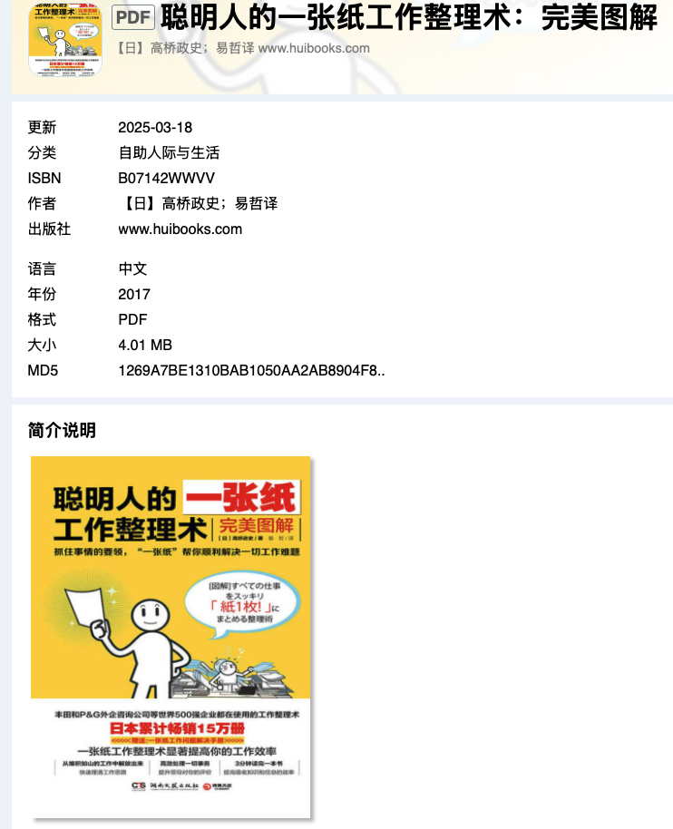

把脑袋里的“乱糟糟”
变成一张藏宝图
这本书教的，不是写漂亮笔记，而是：先想清楚，再把最重要的东西摆在别人看得懂的地方。
作者：高桥政史 中文版：易哲译 图解版核心为 7 个工作模板 + 7 个整读模板
1. 它到底在解决什么？
没整理时
桌上有很多纸，脑袋里有很多想法，但你不知道哪个重要、先做什么、怎么讲给别人听。
整理后
一页纸上看见：目标是谁、问题是什么、证据有哪些、结论是什么、下一步做什么。
2. 全书的“魔法动作”
3. 最重要的工具：S 便笺
S 便笺
- 谁？ 给谁解决
- 什么事？ 现状/烦恼
- 怎么做？ 方案
- 结果如何？ 目标画面
- 结论是？ 一句话主张
像出发前画一张藏宝图：不先写五页方案，先用一张便笺把“为谁、为何、怎么做、做到什么样、核心结论”填上。
Solution：解决问题Story：讲清过程Simple：变简单例：为新员工做培训 → 他们不知道流程 → 做一张上手清单 → 一周内能独立完成 → 先做“入职第一周地图”。
4. 16 分割笔记：把 15 个点子放进小抽屉
日期
为什么有用？ 一格一个信息，15 个点子同时出现，比较容易看见“谁和谁有关系”。
做法：打开笔记本左右两页，画 16 格；左上写主题和日期，其余格子写点子；最后用颜色编码。
颜色不是装饰，而是标签：例如红=最重要、黄=感兴趣、蓝=正在做、绿=要记录。颜色含义可按自己习惯改。
5. 书中 7 个工作模板，一眼看懂
S 便笺
开工前定目标、对象、方案和结论。适合：任何模糊任务。
16 分割笔记
把零散信息变成可检索的小格子。适合：头脑风暴、资料收集。
杀手级速读 / 整读
带着问题读，抓关键词，压成三把“钥匙”，变成行动。适合：筛读职场材料。
一张纸交接地图
把流程、关键节点和注意事项交给新人。适合：交接、培训。
视觉化沟通 / 会议地图
把议题、意见、结论画出来，让讨论不跑偏。适合：会议、共识。
1·2·3 Map
1 个核心消息，配 2W1H 和 3 个要点。适合：报告、提案。
故事型简报
现状 → 变化/问题 → 三段解决方案 → 结果。适合：说服别人。
6. 它的读书法：不是“读得快”，而是“读完能用”
一条小火车 🚂
书中还把阅读按目的分成行动、解决问题、突破视角、原理、本质、人生借鉴、预见等 7 种模板；共同骨架都是“带问题输入 → 压缩 → 输出”。
7. 真正有益的内容
值得留下 ✅
- 先定对象：同一份内容，给老板、客户、新人看，写法完全不同。
- 强迫取舍：一页空间不够，逼你分清“重要”和“只是有趣”。
- 让思考可见：颜色、箭头、顺序能暴露逻辑断点。
- 把读书变行动：不止摘抄，而是写出明天要试的动作。
- 可复用：模板能降低每次从白纸开始的痛苦。
要小心看 ⚠️
- “15 分钟一本书”是筛读目标，不是所有书的承诺。文学、数学、法律、医学、复杂技术都需要慢读。
- 一张纸不是越少越好。细节多时可把一页当总览，附件保留证据。
- 模板不是思考本身。先问问题，再选模板；不要为了填满格子而填。
- 企业案例是宣传性例子。“丰田、P&G在用”不等于任何人照做都必然提效。
8. 今天就能试的 10 分钟练习
拿一张纸，选一个你现在最乱的任务（比如“准备周会”）：
- 左上写：给谁看？日期？
- 写 5 个问题：现状、麻烦、证据、方案、想要的结果。
- 再画 16 格，把所有想法一格一格放进去。
- 圈出最重要的 3 个词，写成一句结论。
- 最后补一句：“明天第一步是……”
如果你只能记住一句话：先把复杂东西摊开，再把它压成别人一眼看懂、自己马上能做的一张纸。